أسئلة امتحانات الثانوية العامة (الفرع العلمي) من 2019 إلى 2025 مصنفة على هذا الفصل: 30 سؤال اختيار من متعدد و41 سؤال مقالي ومسألة. اضغط على خيار لترى إن كان صحيحاً مع الشرح، وحاول حل المسائل قبل ما تفتح الإجابة.
يدور إطار قصوره الدوراني $(I)$ بسرعة زاوية $(\omega)$ عندما يوصل بمحور دورانه إطار آخر ساكن قصوره الدوراني $(2I)$، ما التغير في الزخم الزاوي للإطارين معاً بوحدة $\mathrm{N\cdot m\cdot s}$؟
لا يوجد عزم خارجي، فالزخم الزاوي للنظام محفوظ.
22022 د1 علمي
يمثل الشكل المجاور أسطوانتين مصمتتين ومتساويتين في الكتلة، إذا كان نصف قطر الأسطوانة $(A)$ يساوي مثلي نصف قطر الأسطوانة $(B)$، وتدور كل منهما حول محور ثابت، فما القصور الدوراني للأسطوانة $(A)$؟ (إذا علمت أن $I=\frac12MR^2$)
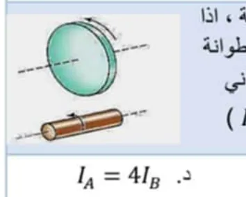
$I\propto R^2$ بثبوت الكتلة ⇐ $I_A=(2)^2I_B$
32022 د1 صناعي
إذا كان القصور الدوراني لمسطرة مترية طولها $\mathrm{1\,m}$ وكتلتها $\mathrm{1\,kg}$ حول محور عمودي عند المركز $(I_1=\frac1{12}ML^2)$ والقصور الدوراني لها حول محور عمودي عند الطرف $(I_2=\frac13ML^2)$، فما النسبة بين $(I_1:I_2)$؟
$\dfrac{1/12}{1/3}=\dfrac14$
42021 د1 صناعي
يبين الشكل المجاور قرصين من مادتين مختلفتين يدوران بنفس السرعة الزاوية حول محور عمودي على مستواهما ويمر بالمركز، ما العلاقة التي تربط طاقة الحركة الدورانية للقرص الثاني بالزخم الزاوي للقرص الأول؟
يبين الشكل المجاور قرصين من مادتين مختلفتين يدوران بنفس السرعة الزاوية حول محور عمودي على مستواهما ويمر بالمركز، ما العلاقة التي تربط الزخم الزاوي للقرص الأول بطاقة الحركة الدورانية للقرص الثاني؟
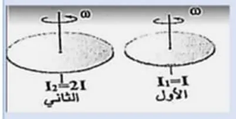
$K_2=I_1\omega^2$ و $L_1=I_1\omega$ ⇐ $L_1^2=I_1^2\omega^2=I_1K_2$
62021 د2 صناعي
أي الآتية ليست من وحدات الزخم الزاوي؟
$\mathrm{kg\cdot m/s}$ وحدة الزخم الخطي.
72020 د3
أربعة أجسام نقطية متماثلة كتلة كل منها $(m)$ موضوعة على رؤوس مربع طول ضلعه $(r)$، فما القصور الدوراني للنظام بالنسبة لمحور عمودي على مستوى المربع يمر في أحد رؤوس المربع؟
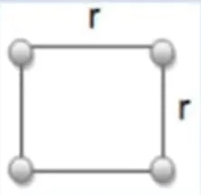
الأبعاد عن المحور: $0,\,r,\,r,\,\sqrt2r$ ⇐ $I=m(0+r^2+r^2+2r^2)=4mr^2$
82019 د2
ما القصور الدوراني بوحدة $\mathrm{kg\cdot m^2}$ لأربع كتل متماثلة قيمة الواحدة منها $(m)$ موضوعة على رؤوس مربع طول ضلعه $(L)$ بالنسبة لمحور عمودي عليه في مركزه؟
بُعد كل كتلة عن المركز $\frac{L}{\sqrt2}$ ⇐ $I=4m\frac{L^2}{2}=2mL^2$
92020 د1
الشكل المجاور يمثل نظام مكون من حلقة معدنية كتلتها $(m)$ يصلها بمركزها $(c)$ ثلاثة أسلاك من نفس المعدن، كتلة السلك الواحد $(m)$ وطوله $(L)$، ما القصور الدوراني للنظام؟ (إذا علمت أن: $I_{حلقة}=mR^2$، $I_{سلك\,عند\,المركز}=\frac1{12}mL^2$، $I_{سلك\,عند\,الطرف}=\frac13mL^2$)
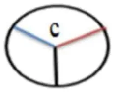
$I=mL^2+3\times\frac13mL^2=2mL^2$ (نصف قطر الحلقة $=L$ وكل سلك يدور حول طرفه)
102019 د1
تدور الأرض حول محورها مرة واحدة يومياً بسرعة زاوية $(\omega)$، افترض أن سرعتها الزاوية أصبحت $(\frac14\omega)$ وباعتبار كثافة الأرض منتظمة وكتلتها ثابتة، ماذا حدث لقطر الأرض في الحالة الافتراضية؟ علماً بأن $I_{كرة\,مصمتة}=\frac25mR^2$
حفظ الزخم الزاوي: $I\omega=I'\frac\omega4$ ⇐ $I'=4I$ ⇐ $R'^2=4R^2$ ⇐ $R'=2R$
112020 د3
ما الكمية المحفوظة دائماً في أية عملية تلاصق لمنظومة من الأجسام تتحرك دورانياً حول محور ثابت؟
في غياب العزم الخارجي يبقى الزخم الزاوي محفوظاً.
12—
يدور قمر صناعي في مسار دائري حول الأرض إذا كانت كتلته $(m)$ وسرعته ثابتة مقدارها $(v)$، فما مقدار التغير في زخمه الزاوي عند دورانه نصف دورة؟
الزخم الزاوي للقمر حول مركز الأرض ثابت مقداراً واتجاهاً (عمودي على مستوى المدار)، فالتغير صفر.
132019 د3
الشكل المجاور يمثل العلاقة بين الزخم الزاوي والزمن لعجلة تدور حول محور عمودي عليها يمر من مركزها، ماذا يمثل ميل الخط المستقيم؟
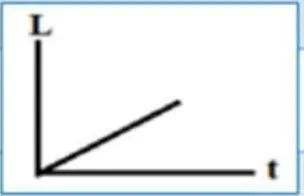
$\tau=\dfrac{\Delta L}{\Delta t}$
142020 د2
الشكل المقابل يمثل العلاقة بين الزخم الزاوي والسرعة الزاوية $(L,\omega)$ لجسم يتحرك حركة دورانية، ماذا يمثل ميل المنحنى؟
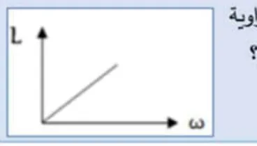
$L=I\omega$ ⇐ الميل $=I$
152020 د2
جسم يتحرك دورانياً بسرعة زاوية $(\omega_1)$ وطاقته الحركية $(k_1)$، فإذا أصبحت سرعته الزاوية $(3\omega_1)$، فكم تصبح طاقته الحركية $(k_2)$؟
$K\propto\omega^2$
162019 د2
جسمان $(A,B)$ إذا كان $(I_B=2I_A)$ وكان $(L_B=4L_A)$ فكم تساوي الطاقة الحركية الدورانية $(K_B)$؟
$K=\dfrac{L^2}{2I}$ ⇐ $K_B=\dfrac{16}{2}K_A=8K_A$
172019 د3
جسمان $(X,Y)$ إذا كان $(K_y=8K_x)$، $(I_y=2I_x)$ فإن $(\omega_y)$ تساوي:
يدور إطار قصوره الدوراني $(I=0.1\,\mathrm{kg\cdot} m^2)$ بسرعة زاوية $\mathrm{(900\,rev/min)}$، عندما يُوصل بمحور دورانه إطار آخر ساكن قصوره الدوراني $(5I)$ ما مقدار السرعة الزاوية للإطارين معاً بوحدة $\mathrm{(rad/s)}$؟
ساق رفيعة متجانسة كتلتها $\mathrm{(1\,kg)}$ وطولها $\mathrm{(2\,m)}$، مثبت على كل من طرفيها كتلة مقدارها $\mathrm{(0.5\,kg)}$، ما القصور الدوراني للنظام حول محور عمودي على الساق ويمر بإحدى الكتلتين بوحدة $\mathrm{(kg\cdot m^2)}$؟ علماً بأن $I_{مركز}=\frac1{12}ML^2$، $I_{طرف}=\frac13ML^2$
جسم نقطي كتلته $(\frac12\,\mathrm{g)}$ يتحرك في مسار دائري قطره $\mathrm{(1\,m)}$ بحيث يصنع $(4)$ دورات في الثانية، فما مقدار الزخم الزاوي بوحدة $\mathrm{(kg\cdot m^2\cdot rad/s)}$؟
يمثل الشكل المجاور جسمين نقطيين مثبتين على سلك رفيع مهمل الوزن، إذا كان القصور الدوراني للنظام عندما يكون محور الدوران في النقطة $(a)$ يساوي $(I)$، فما قيمة القصور الدوراني إذا كان محور الدوران في النقطة $(b)$؟
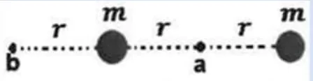
حول $a$: $I=2mr^2$. حول $b$: $m r^2+m(3r)^2=10mr^2=5I$
252024 د2
قرص مصمت قصوره الدوراني يساوي $\mathrm{(1\,kg\cdot m^2)}$ ويدور بسرعة زاوية ثابتة، إذا كانت الطاقة الحركية الدورانية للقرص أثناء دورانه $\mathrm{(200\,J)}$، فما الزخم الزاوي للقرص بوحدة $\mathrm{(N\cdot m\cdot s)}$؟
$L=\sqrt{2IK}=\sqrt{2(1)(200)}=20$
262024 استكمالية
جسمان $(A,B)$ فإذا كان $(I_B=\frac12I_A)$ و $(K_B=8K_A)$، فكم يساوي الزخم الزاوي للجسم $B$ $(L_B)$؟
ما القصور الدوراني لأربع كتل متماثلة قيمة الواحدة منها $\mathrm{(3\,kg)}$ موضوعة على رؤوس الشكل المجاور $\mathrm{(40\,cm-30\,cm)}$ بالنسبة لمحور عمودي عليه في مركزه بوحدة $\mathrm{(kg\cdot m^2)}$؟
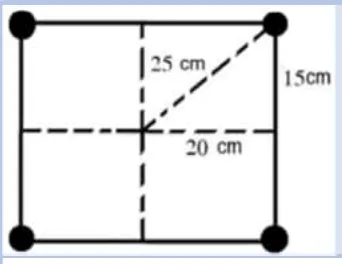
بُعد كل كتلة عن المركز $\mathrm{25\,cm}$ ⇐ $I=4(3)(0.25)^2=0.75$
282025 د1
قرصان يدوران حول محور عديم الاحتكاك كما في الشكل، فإذا أثرت فيهما قوتان موازيتان للمحور بحيث التصق القرصان، ما سرعتهما الزاوية بعد الالتصاق مباشرة؟
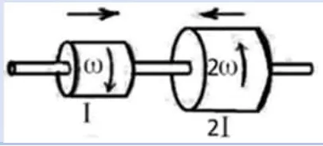
القرصان يدوران باتجاهين متعاكسين: $L=2I(2\omega)-I\omega=3I\omega$ ⇐ $\omega'=\dfrac{3I\omega}{3I}=\omega$ باتجاه دوران الكبير
292025 د2
جسم صلب يدور حول محور ثابت بسرعة زاوية أولية $(\omega_1)$ وطاقته الحركية الدورانية $(K_1)$ إذا تناقصت سرعته الزاوية إلى النصف، ما العلاقة التي تصف طاقته الحركية الدورانية الجديدة $(K_2)$؟
$K\propto\omega^2$
302025 د2
يدور قرص قصوره الدوراني $(I)$ حول محور عمودي بسرعة زاوية $(\omega_1)$، عندما يوصل بمحور دورانه قرص آخر ساكن قصوره الدوراني $(2I)$، ما هي السرعة الزاوية النهائية للنظام $(\omega)$؟
$I\omega_1=3I\,\omega$
السؤال الثاني (أ): ما المقصود بـ
12021 د1 صناعي وعلمي
قانون حفظ الزخم الزاوي
أظهر الإجابة
إذا كانت محصلة العزوم الخارجية المؤثرة على نظام تساوي صفراً، فإن الزخم الزاوي للنظام يبقى ثابتاً مقداراً واتجاهاً: $I_1\omega_1=I_2\omega_2$
22021 د1 صناعي وعلمي
نص القانون الثاني لنيوتن في الحركة الدورانية والصيغة الرياضية له.
أظهر الإجابة
العزم المحصل المؤثر في جسم يدور حول محور ثابت يساوي حاصل ضرب القصور الدوراني للجسم في تسارعه الزاوي: $\Sigma\tau=I\alpha$ (أو: العزم يساوي المعدل الزمني للتغير في الزخم الزاوي $\tau=\dfrac{\Delta L}{\Delta t}$).
32024 د1
الطاقة الحركية الدورانية
أظهر الإجابة
الطاقة التي يمتلكها جسم بسبب دورانه حول محور، وتساوي $K=\frac12I\omega^2$
42025 د1
القصور الدوراني
أظهر الإجابة
ممانعة الجسم لإحداث تغيير في حالته الدورانية، ويساوي مجموع حاصل ضرب كتلة كل جسيم في مربع بعده العمودي عن محور الدوران: $I=\Sigma m r^2$
السؤال الثاني (ب): علّل لما يلي
12019 د2
تزداد السرعة الزاوية لراقص الجليد عندما يضم يديه إلى صدره.
أظهر الإجابة
لأن الكتلة تقترب من محور الدوران فيقل القصور الدوراني، وبما أن الزخم الزاوي محفوظ $(I\omega=$ ثابت$)$ تزداد السرعة الزاوية.
22022 د1 علمي وصناعي
نقصان السرعة الزاوية لراقص على الجليد عندما يفتح ذراعيه.
أظهر الإجابة
لأن الكتلة تبتعد عن محور الدوران فيزداد القصور الدوراني، وبما أن الزخم الزاوي محفوظ تقل السرعة الزاوية.
32023 د1
في آلة لف الصفائح المعدنية يتم استخدام أسطوانات ذات قطر كبير وكتلة كبيرة نسبياً تثبت إلى جذع الآلة.
أظهر الإجابة
لزيادة القصور الدوراني للأسطوانة $(I\propto mR^2)$، فتقاوم التغير في حالتها الدورانية وتقل سرعتها الزاوية، وبذلك يكون التحكم بإيقافها وتحريكها سهلاً وتدور بانتظام أثناء لف الصفائح.
السؤال الثاني (ج): ماذا يحدث، أثبت، قارن
12021 د2 علمي
ماذا يحدث للسرعة الزاوية للكرة الأرضية إذا انكمشت بحيث قل قطرها إلى النصف علماً بأن كتلتها لم تتغير وكثافتها منتظمة؟ مع العلم أن $I=\frac25mr^2$
أظهر الإجابة
يقل القصور الدوراني إلى الربع، وبما أن الزخم الزاوي محفوظ تزداد السرعة الزاوية أربعة أمثال: $\omega_2=4\omega_1$
22022 د2 علمي
ماذا يحدث للسرعة الزاوية للراقص على الجليد عندما يضم يديه إلى صدره؟
أظهر الإجابة
تزداد، لأن قصوره الدوراني يقل والزخم الزاوي محفوظ.
32022 د2 صناعي
مبتدئاً بالقانون الثاني لنيوتن في الحركة الانتقالية، أثبت أن القانون الثاني لنيوتن في الحركة الدورانية يُعطى بالعلاقة: $\tau=I\alpha$
أظهر الإجابة
$F=ma$، وبضرب الطرفين في $r$: $Fr=mra$ وبما أن $a=r\alpha$ (التسارع المماسي) و $\tau=Fr$: $\tau=mr^2\alpha$ ولجسم مكون من عدة جسيمات: $\Sigma\tau=(\Sigma mr^2)\alpha=I\alpha$
42022 د1 علمي
قارن بين الزخم الخطي والزخم الزاوي من حيث العوامل المؤثرة على كل منهما.
أظهر الإجابة
الزخم الخطي $P=mv$: يعتمد على الكتلة والسرعة الخطية. الزخم الزاوي $L=I\omega$: يعتمد على القصور الدوراني (الكتلة وتوزيعها حول محور الدوران) والسرعة الزاوية.
52022 د2 صناعي
قارن بين الحركة الانتقالية والحركة الدورانية من حيث: سبب التحريك، وممانعة التحريك.
أظهر الإجابة
سبب التحريك: الانتقالية: القوة $F$. الدورانية: العزم $\tau$. ممانعة التحريك: الانتقالية: الكتلة $m$. الدورانية: القصور الدوراني $I$.
62022 د1 صناعي
اذكر شروط حفظ الزخم الزاوي.
أظهر الإجابة
(1) أن تكون محصلة العزوم الخارجية المؤثرة على الجسم أو المنظومة تساوي صفراً. (2) أن يبقى محور الدوران ثابتاً من دون تغيير.
السؤال الثالث: المسائل الحسابية
12022 د1 علمي
إطار نصف قطره $\mathrm{(1.5\,m)}$ وقصوره الدوراني $\mathrm{(3\,kg\cdot m^2)}$ يدور حول محور عمودي على مستواه ويمر من مركزه، إذا أثرت عليه قوة مماسية فتناقص زخمه الزاوي من $\mathrm{(24\,kg\cdot m^2\cdot rad/s)}$ إلى $\mathrm{(12\,kg\cdot m^2\cdot rad/s)}$ في زمن مقداره $\mathrm{8\,s}$، احسب: (أ) مقدار القوة المماسية التي أثرت على الإطار خلال هذه الفترة (ب) عدد الدورات التي يدورها الإطار خلال هذه الفترة.
أظهر الإجابة
(أ) $\tau=\dfrac{\Delta L}{\Delta t}=\dfrac{12-24}{8}=-1.5\,\mathrm{N\cdot} m$ ⇐ $F=\dfrac{\tau}{R}=\dfrac{1.5}{1.5}=1\,\mathrm{N}$ (ب) $\omega_1=\dfrac{24}{3}=8$، $\omega_2=\dfrac{12}{3}=4\,\mathrm{rad/s}$ ⇐ $\theta=\dfrac{\omega_1+\omega_2}{2}t=6\times8=48\,\mathrm{rad}$ ⇐ عدد الدورات $=\dfrac{48}{2\pi}\approx7.6$ دورة
22022 د1 صناعي
صفيحة أسطوانية الشكل كتلتها $\mathrm{(6\,kg)}$ ونصف قطرها $\mathrm{(0.2\,m)}$ أثرت عليه قوة مماسية فبدأت الدوران من السكون حول محور ثابت يمر من مركزها وعمودي عليها حتى أصبحت سرعتها الزاوية $\mathrm{(5\,rad/s)}$ خلال $\mathrm{(2\,s)}$، علماً بأن $I=\frac12mR^2$، احسب: (أ) متوسط العزم المؤثر على الأسطوانة خلال هذه الفترة الزمنية (ب) الزاوية التي تدورها الأسطوانة خلال هذه الفترة الزمنية.
قرص رقيق مصمت ساكن، قصوره الدوراني $\mathrm{(0.2\,kg\cdot m^2)}$، ونصف قطره $\mathrm{(20\,cm)}$، أثرت فيه ثلاث قوى كما في الشكل المجاور ولمدة $\mathrm{(6\,s)}$، فدار حول محور ثابت عديم الاحتكاك عمودي على مستواه ومار بمركزه، جد: (أ) عدد الدورات التي يدورها القرص خلال هذه الفترة (ب) الطاقة الحركية الدورانية عند نهاية هذه الفترة الزمنية.
طوق طول قطره $\mathrm{40\,cm}$ وكتلته $\mathrm{1\,kg}$ ثبت عليه سلكان كتلة كل منهما $\mathrm{0.5\,kg}$ يمران من مركز الطوق كما هو موضح في الشكل المجاور، حيث يدور الطوق مع الأسلاك بسرعة زاوية $\mathrm{2\,rev/min}$، احسب: (1) القصور الدوراني للنظام (2) الزخم الزاوي للنظام (3) الطاقة الحركية الدورانية حول محور عمودي عند المركز. علماً بأن $I_{حلقة}=MR^2$، $I_{سلك\,عند\,المركز}=\frac1{12}ML^2$
يدور جسم صغير كتلته $(m)$ مثبت في نهاية خيط في مسار دائري على سطح طاولة أفقي أملس، ويمر الطرف الآخر للخيط عبر ثقب في سطح الطاولة كما في الشكل المجاور، فإذا كانت الكرة تدور بسرعة $(v_1)$ في مسار دائري قطره $(r_1)$ ثم سحب الخيط ببطء عبر الثقب بحيث أصبح قطر المسار الدائري $(r_2)$، أثبت أن سرعة الجسم $(v_2)$ تعطى بالعلاقة: $v_2=v_1\dfrac{r_1}{r_2}$
يدور قرص كتلته $\mathrm{(100\,kg)}$ ونصف قطره $\mathrm{(0.8\,m)}$ بسرعة زاوية $\mathrm{(500\,rev/s)}$ حول محور يمر بمركزه عمودياً على مستواه. إذا علمت أن القرص توقف خلال $\mathrm{(10\,s)}$ وأن $I=\frac12mR^2$. احسب: (أ) طاقة الحركة الابتدائية للقرص (ب) التسارع الزاوي للقرص.
أظهر الإجابة
$I=\frac12(100)(0.8)^2=32\,\mathrm{kg\cdot} m^2$ بالمعطيات كما هي $(\omega=500\times2\pi=1000\pi\,\mathrm{rad/s)}$: (أ) $K=\frac12(32)(1000\pi)^2\approx1.58\times10^8\,\mathrm{J}$ (ب) $\alpha=\dfrac{0-1000\pi}{10}\approx-314\,\mathrm{rad/s^2}$ ملاحظة: مفتاح الإجابة اعتمد السرعة $\mathrm{500\,rev/min}$ $(\omega\approx52.4\,\mathrm{rad/s)}$ فكانت النتائج: $K\approx4.38\times10^4\,\mathrm{J}$ و $\alpha\approx-5.24\,\mathrm{rad/s^2}$
72021 د1 علمي
عجلة قطرها $\mathrm{(0.72\,m)}$ وقصورها الدوراني $\mathrm{(4.2\,kg\cdot m^2)}$، أثرت في حافتها قوة مماسية مقدارها $\mathrm{(10\,N)}$ فبدأت الحركة من السكون حول محور عمودي على مستواها ويمر بمركزها. بعد دقيقتين من لحظة تأثير القوة، احسب: (1) طاقة الحركة الدورانية للعجلة (2) عدد الدورات التي صنعتها العجلة (3) الزخم الزاوي للعجلة.
كرة مصمتة قطرها $\mathrm{(25\,cm)}$ وكتلتها $\mathrm{(4\,kg)}$ أثرت عليها القوى الموضحة بالشكل، إذا علمت أن قصورها الدوراني يعطى بالعلاقة $(I=\frac25mr^2)$ أجب عن التالي: (1) احسب التسارع الزاوي للكرة (2) احسب الطاقة الحركية الدورانية بعد ثانيتين من بدء حركتها من السكون (3) ما المقصود بعزم القصور الدوراني؟
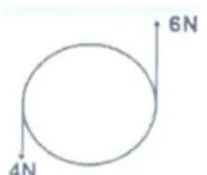
أظهر الإجابة
$r=12.5\,\mathrm{cm}$ ⇐ $I=\frac25(4)(0.125)^2=0.025\,\mathrm{kg\cdot} m^2$ القوتان مماسيتان على جانبين متقابلين وتدوّران بنفس الاتجاه: $\Sigma\tau=(6+4)(0.125)=1.25\,\mathrm{N\cdot} m$ (1) $\alpha=\dfrac{1.25}{0.025}=50\,\mathrm{rad/s^2}$ (2) $\omega=50\times2=100\,\mathrm{rad/s}$ ⇐ $K=\frac12(0.025)(100)^2=125\,\mathrm{J}$ (3) القصور الدوراني: ممانعة الجسم لأي تغيير في حالته الدورانية. ملاحظة: مفتاح الإجابة عامل $\mathrm{25\,cm}$ كنصف قطر فحصل على $\alpha=25\,\mathrm{rad/s^2}$ و $\tau=2.5\,\mathrm{N\cdot} m$، والطاقة النهائية نفسها $\mathrm{125\,J}$.
92021 د2 علمي
ساق فلزية متجانسة كتلتها $M$ وطولها $L$ مثبت على كل طرف من أطرافها كتلة نقطية $m$ إذا علمت أن $(m=M)$. جد: (1) القصور الدوراني عندما تدور حول محور عمودي يمر من مركز الساق (2) القصور الدوراني عندما تدور حول محور عمودي يمر من أحد أطرافها. علماً أن: $I_{مركز}=\frac1{12}ML^2$، $I_{طرف}=\frac13ML^2$
يقف رجل على منصة تدور بسرعة زاوية $\mathrm{(1\,rev/s)}$ حاملاً في يديه الممدودتين كتلتين متماثلتين، ثم يضم يديه لصدره ليتناقص قصوره الدوراني من $\mathrm{(5\,kg\cdot m^2)}$ إلى $\mathrm{(4\,kg\cdot m^2)}$. احسب ما يلي: (1) سرعته الزاوية بعد ضم يديه لصدره (2) التغير في طاقته الحركية.
تدور كرة صغيرة كتلتها $(m)$ مثبتة في نهاية خيط في مسار دائري على سطح طاولة أفقي أملس ويمر الطرف الآخر للخيط عبر ثقب في سطح الطاولة كما في الشكل المجاور. إذا كانت الكرة تدور بسرعة $\mathrm{(5\,m/s)}$ في مسار دائري قطره $\mathrm{(0.5\,m)}$ ثم سحب الخيط ببطء عبر الثقب بحيث أصبح قطر المسار الدائري $\mathrm{(0.2\,m)}$، كم تصبح سرعة الكرة $(v_2)$؟
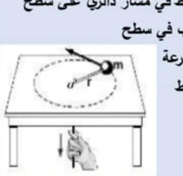
أظهر الإجابة
حفظ الزخم الزاوي: $mv_1r_1=mv_2r_2$ ⇐ $v_2=5\times\dfrac{0.5}{0.2}=12.5\,\mathrm{m/s}$
122019 د2
أسطوانة قطر قاعدتها $\mathrm{(2\,m)}$ وقصورها الدوراني $\mathrm{(0.3\,kg\cdot m^2)}$ أثرت عليها القوى $\mathrm{(5\,N)}$، $\mathrm{(10\,N)}$ كما في الشكل المجاور فبدأت الدوران من السكون. جد: (1) التسارع الزاوي للأسطوانة (2) الطاقة الحركية الدورانية للأسطوانة بعد $\mathrm{(2.5\,s)}$ من بدء حركتها.
مسطرة طولها $\mathrm{(1\,m)}$ وكتلتها $\mathrm{(0.3\,kg)}$ موضوعة على سطح أفقي أملس كما بالشكل المجاور، تؤثر عليها قوة عمودية $\mathrm{(5\,N)}$ عند أحد طرفيها، فإذا دارت حول محور عمودي يمر من مركزها $(O)$ مرة وحول محور عمودي يمر بطرفها الآخر $(P)$ مرة أخرى. احسب: التسارع الزاوي عند كل محور من محاور الدوران.
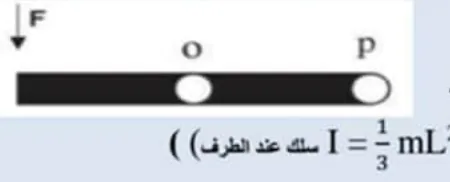
أظهر الإجابة
حول $O$: $\tau=5(0.5)=2.5\,\mathrm{N\cdot} m$، $I=\frac1{12}(0.3)(1)^2=0.025$ ⇐ $\alpha=100\,\mathrm{rad/s^2}$ حول $P$: $\tau=5(1)=5\,\mathrm{N\cdot} m$، $I=\frac13(0.3)(1)^2=0.1$ ⇐ $\alpha=50\,\mathrm{rad/s^2}$
142020 د3
عجلة الدراجة الهوائية الموضحة في الشكل المجاور طول نصف قطرها $\mathrm{(30\,cm)}$ وكتلة محيطها $\mathrm{(2\,kg)}$ وكتلة كل قطر فيها $\mathrm{(0.5\,kg)}$ وتدور بسرعة زاوية $\mathrm{(2\,rev/s)}$، علماً أن: $I_{حلقة}=MR^2$، $I_{سلك\,عند\,المركز}=\frac1{12}ML^2$، $I_{سلك\,عند\,الطرف}=\frac13ML^2$. احسب: (1) القصور الدوراني للعجلة (2) طاقة الحركة الدورانية لها حول محور عمودي عليها عند مركزها.
في الشكل المجاور يجلس طالب على كرسي دوار حاملاً في يديه الممدودتين كتلتين متماثلتين، كتلة كل منهما $\mathrm{(3\,kg)}$ والمسافة بينهما $\mathrm{(2\,m)}$ ويدور بسرعة زاوية $\mathrm{(0.75\,rev/s)}$، والقصور الدوراني للطالب والكرسي معاً $\mathrm{(3\,kg\cdot m^2)}$، إذا ضم يديه لصدره أفقياً لتصبح المسافة بين الكتلتين $\mathrm{(0.6\,m)}$، بفرض ثبوت كل من القصور الدوراني للطالب والكرسي، احسب: (1) سرعة الطالب الزاوية بعد ضم يديه لصدره (2) التغير في طاقته الحركية.
الشكل المجاور يبيّن أسطوانة مصمتة قائمة، كتلتها $(M)$ ونصف قطر قاعدتها $(R)$، قابلة للدّوران حول محورها، أثرت عليها القوتان المماسيتان $(F_1,F_2)$، حيث $(F_2=2F_1)$، $(I=\frac12MR^2)$ أثبت أنّ: الطاقة الحركية الدورانية للأسطوانة بعد ثانيتين من بدء دورانها من السكون تعطى بالعلاقة: $K=\dfrac{4F_1^2}{M}$
يدور قرص كتلته $\mathrm{(2\,kg)}$ ونصف قطره $\mathrm{(10\,cm)}$ حول محور يمر من مركزه وعمودياً على مستواه بسرعة زاوية مقدارها $\mathrm{(5\,rad/s)}$، فإذا أصبحت سرعته الزاوية $\mathrm{(15\,rad/s)}$ بعد $\mathrm{(10\,s)}$ من بدء الحركة، احسب: (1) التغير في الزخم الزاوي للقرص خلال $\mathrm{(10\,s)}$ (2) عزم الدوران الكلي خلال $\mathrm{(10\,s)}$.
تؤثر قوتان $(F_1,F_2)$ على قرص صلب كتلته $\mathrm{(2\,kg)}$ ونصف قطره $\mathrm{(30\,cm)}$، فبدأ بالدوران عكس عقارب الساعة من السكون حيث وصلت سرعته الزاوية بعد مرور $\mathrm{(5\,s)}$ إلى $\mathrm{(10\,rad/s)}$، احسب: (1) عزم القصور الدوراني للقرص، علماً بأن: $I=\frac12MR^2$ (2) مقدار القوة $(F_2)$ (3) التغير في الطاقة الحركية الدورانية للقرص خلال نفس الفترة الزمنية.
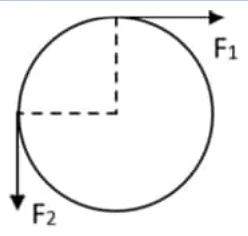
أظهر الإجابة
(1) $I=\frac12(2)(0.3)^2=0.09\,\mathrm{kg\cdot} m^2$ $\alpha=\dfrac{10}{5}=2\,\mathrm{rad/s^2}$ ⇐ $\Sigma\tau=0.09\times2=0.18\,\mathrm{N\cdot} m$ (2) $F_2$ تدوّر عكس عقارب الساعة و $F_1$ مع عقارب الساعة: $(F_2-F_1)(0.3)=0.18$. بأخذ $F_1=10\,\mathrm{N}$ (قيمتها في الامتحان الأصلي) ⇐ $F_2=10.6\,\mathrm{N}$ (3) $\Delta K=\frac12(0.09)(10)^2=4.5\,\mathrm{J}$
192023 د2
يستخدم حجر من البازلت لاستخراج الطحينة من السمسم إذا كان نصف قطره $\mathrm{(50\,cm)}$ وكتلته $\mathrm{(240\,kg)}$، وعند التأثير عليه بعزم دوران ثابت تصل سرعة دوران الحجر إلى $\mathrm{(1200\,rev/min)}$ خلال $\mathrm{(16\,s)}$، على فرض أن الحجر كان ساكناً قبل بدء الحركة وأن $(I=\frac12MR^2)$، احسب: (1) عزم الدوران المؤثر (2) الزاوية التي دارها خلال $\mathrm{(16\,s)}$ (3) الزخم الزاوي للحجر بعد $\mathrm{(16\,s)}$.
قرص مصمت قابل للدوران حول محور يمر بمركزه وعمودي على مستواه، وقصوره الدوراني $(2\times10^{-3}\,\mathrm{kg\cdot} m^2)$، أُثّر عليه عزم دوران ثابت، فوصلت سرعة دورانه إلى $\mathrm{(1500\,rev/min)}$ خلال $\mathrm{(20\,s)}$، على فرض أنّ القرص كان ساكناً قبل التأثير عليه بعزم الدوران، احسب: (1) التسارع الزاوي للقرص (2) عزم الدوران المؤثر (3) عدد الدورات التي يصنعها القرص خلال $\mathrm{(20\,s)}$.
قرصان كتلة كل منهما $(M)$ ونصف قطر الأول $(R)$ ونصف قطر الثاني $(0.5R)$ يدوران حول محور عديم الاحتكاك كما في الشكل المجاور، فإذا أثرت فيهما قوتان موازيتان للمحور بحيث التصق القرصان. إذا كانت سرعة دوران القرص الأول $\mathrm{(900\,rev/min)}$ وسرعة دوران القرص الثاني $\mathrm{(300\,rev/min)}$. احسب السرعة الزاوية للقرصين معاً بعد أن التصقا علماً بأن $(I=\frac12MR^2)$.
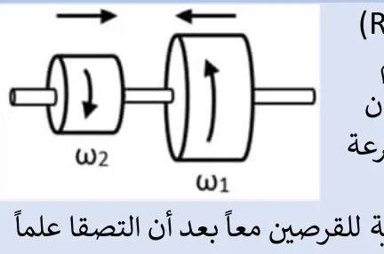
أظهر الإجابة
$I_1=\frac12MR^2$، $I_2=\frac12M(0.5R)^2=\frac18MR^2$، والقرصان يدوران باتجاهين متعاكسين: $\frac12(900)-\frac18(300)=\left(\frac12+\frac18\right)\omega$ ⇐ $412.5=0.625\,\omega$ ⇐ $\omega=660\,\mathrm{rev/min}=22\pi\approx69\,\mathrm{rad/s}$ باتجاه دوران القرص الأول
222024 د1
ساق معدنية متجانسة طولها $\mathrm{(1\,m)}$ ووزنها $\mathrm{(60\,N)}$ أثرت عليها القوى الموضحة في الشكل، احسب: (1) محصلة العزوم المؤثرة على الساق حول محور الدوران عند النقطة $(O)$ (2) التسارع الزاوي لها عند نفس المحور (3) عدد الدورات التي ستدورها الساق خلال ثلاث ثوانٍ من تأثير القوى بدءاً من السكون. علماً أن القصور الدوراني للساق $(I_{عند\,الطرف}=\frac13ML^2)$
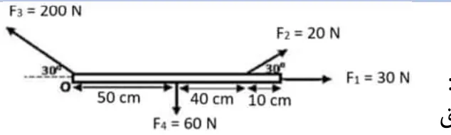
أظهر الإجابة
$F_3$ تمر بالمحور و $F_1$ على امتداد الساق: عزمهما صفر. (1) $\tau_{F_4}=-60(0.5)=-30$، $\tau_{F_2}=+20\sin30(0.9)=+9$ ⇐ $\Sigma\tau=-21\,\mathrm{N\cdot} m$ (مع عقارب الساعة) (2) $m=6\,\mathrm{kg}$، $I=\frac13(6)(1)^2=2$ ⇐ $\alpha=10.5\,\mathrm{rad/s^2}$ (3) ملاحظة: التسارع $\mathrm{10.5\,rad/s^2}$ صحيح لحظة البدء فقط؛ إذا كانت الساق تدور في مستوى رأسي فإن عزم الوزن يتغير مع تغير الزاوية، فلا يمكن حساب عدد الدورات بقوانين التسارع الثابت. (لو كان التسارع ثابتاً: $\theta=\frac12(10.5)(9)=47.25\,\mathrm{rad}\approx7.5$ دورة)
232024 د2
القصور الدوراني لحجر رحى يساوي $(1.6\times10^{-3}\,\mathrm{kg\cdot} m^2)$، وعند التأثير بعزم دوران ثابت تصل سرعة دوران الحجر إلى $(1200$ دورة$)$ في الدقيقة خلال $\mathrm{(15\,s)}$، وعلى فرض أن الحجر كان ساكناً قبل بدء الحركة، احسب كلاً من: (1) التسارع الزاوي للحجر (2) عزم الدوران المؤثر (3) الزاوية التي يدورها حجر الرحى خلال 15 ثانية.
قشرة كروية كتلتها $\mathrm{(800\,g)}$ ونصف قطرها $\mathrm{(20\,cm)}$، قصورها الدوراني حول محور يمر من مركزها يعطى بالعلاقة $(I=\frac23MR^2)$، أثرت عليها قوة مماسية لمدة $\mathrm{(5\,s)}$. إذا مثلت العلاقة بين السرعة الزاوية للقشرة الكروية والزمن كما في الشكل المجاور، احسب: (1) القوة المؤثرة على القشرة الكروية (2) الطاقة الحركية الدورانية النهائية.
كرة مصمتة ساكنة كتلتها $\mathrm{(3\,kg)}$ ونصف قطرها $\mathrm{(0.5\,m)}$ بدأت بالدوران حول محور يمر من مركزها بشكل عمودي تحت تأثير عزم دوران بحيث كانت تعمل $\mathrm{(360\,rev/min)}$ خلال $\mathrm{(12\,s)}$، إذا علمت أن القصور الدوراني للكرة يعطى بالعلاقة $(I=\frac25MR^2)$، احسب: (1) مقدار العزم الذي أثر على الكرة (2) القوة المماسية المؤثر على الكرة (3) عدد الدورات التي دارتها الكرة خلال $\mathrm{(12\,s)}$ (4) الطاقة الحركية الدورانية للكرة في نهاية الفترة الزمنية.
يعلق جسم كتلته $(m_2=2\,\mathrm{kg)}$ بنهاية خيط يمر حول بكرة قابلة للدوران، كتلتها $(m_1=4\,\mathrm{kg)}$ ونصف قطرها $\mathrm{(10\,cm)}$، مثبتة بحيث يمكنها الدوران حول محور أفقي يمر من مركزها كما في الشكل المجاور، وبإهمال الاحتكاك (القصور الدوراني للبكرة يعطى بالعلاقة $I=\frac12m_1R^2$) احسب كلاً من: (1) التسارع الزاوي للبكرة (2) الطاقة الحركية الدورانية للبكرة بعد 3 ثوانٍ من بدء حركتها من السكون.
جسم كتلته $\mathrm{(5\,kg)}$ يدور في مسار دائري أفقي بسرعة مماسية $(10\pi\,\mathrm{m/s)}$ بحيث يستغرق دورة كاملة كل دقيقتين، احسب للجسم كلاً من: (1) السرعة الزاوية (2) القصور الدوراني (3) الزخم الزاوي.
يدور قرص كتلته $\mathrm{(20\,kg)}$ ونصف قطره $\mathrm{(1\,m)}$ حول محور يمر في مركزه، إذا توقف القرص خلال $(20)$ ثانية تحت تأثير عزم دوران مقداره $\mathrm{(10\,N\cdot m)}$، إذا علمت أن القصور الدوراني للقرص يساوي $(I=\frac12mR^2)$ احسب: (1) السرعة الزاوية الابتدائية للقرص (2) الطاقة الحركية الدورانية الابتدائية للقرص.